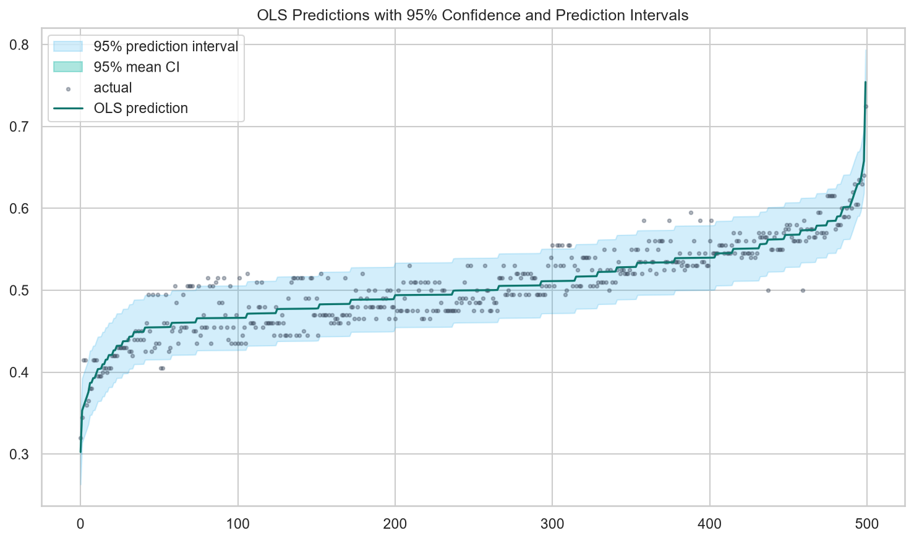
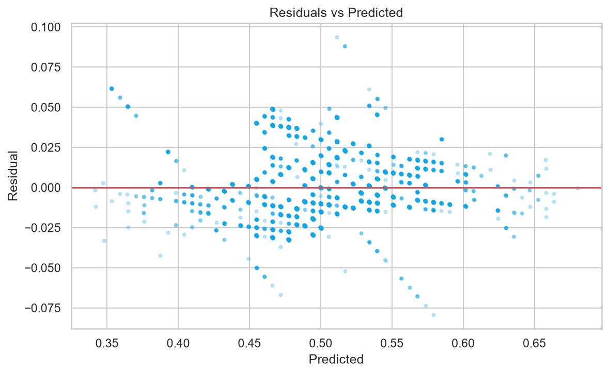
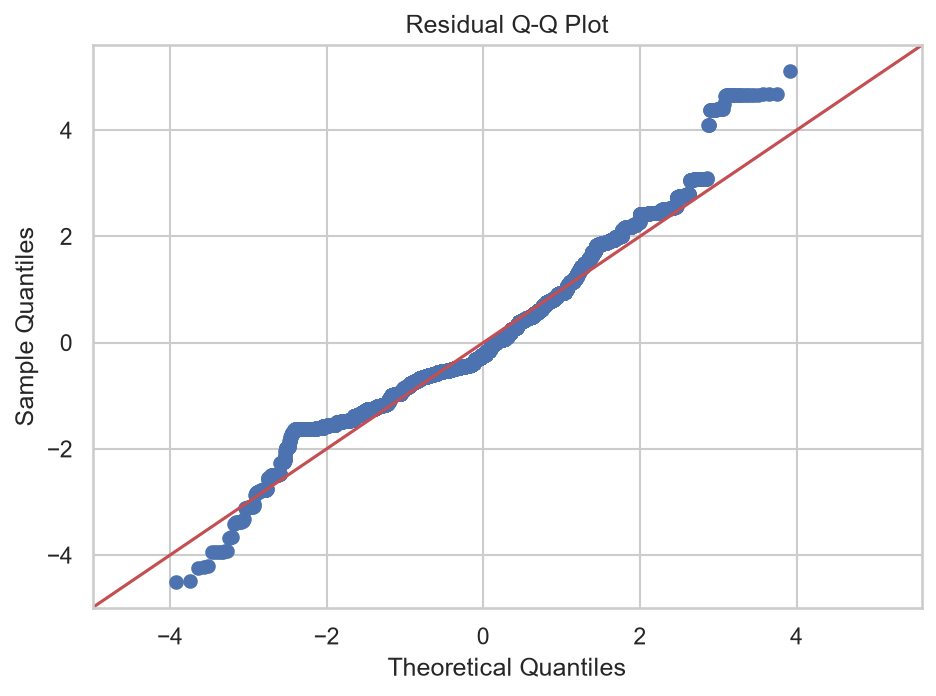

Kaggle Playground Series S4E5 · Multiple Linear Regression
把洪水風險資料，
拆成可驗證的線性證據。
以 1,117,957 筆真實競賽資料比較 OLS、SelectKBest、RFE、Ridge 與 Lasso；所有指標、圖表與互動預測均由 Python 管線匯出。
DATA UNDERSTANDING
資料不是背景，是模型的邊界
20 個數值特徵、無缺值；id 僅作識別，不進入模型。
FloodProbability 分布
—與目標的相關性
Pearson r資料品質與限制
官方競賽 CSV—缺失值
20模型特徵
0重複 id
非因果解讀界線
MODELING
同一套切分，公平比較
候選模型只使用 training data 的 5-fold CV 選擇；final holdout 只評估凍結後的推薦模型一次。
模型家族比較
CURRENT MODEL
—
CV RMSE—
Validation R²—
Features—
特徵數量與 CV RMSE
SelectKBest / RFEEVALUATION
漂亮分數之外，檢查模型假設
OLS 提供統計推論與 95% CI/PI；Ridge/Lasso 不冒用 OLS 解析區間。



DEPLOYMENT
What-If Flood Prediction Simulator
每個欄位預設為訓練中位數；超出訓練範圍會警告，不會擅自裁切預測。
CRISP-DM & REPORT
六階段可重現分析
從課題界定到靜態部署，每個網站數字皆可回溯到 Python 產物。
Business Understanding
以 20 個競賽特徵預測 FloodProbability；不是實際災害預警，也不做因果宣稱。
Data Understanding
驗證 111 萬筆資料的 schema、品質、分布、相關性與觀測範圍。
Data Preparation
固定 seed 42，64/16/20 切分；前處理與 selector 僅在 training fold fit。
Modeling
比較 Dummy、OLS、SelectKBest、RFE、Ridge、Lasso，採 5-fold CV。
Evaluation
MAE、MSE、RMSE、R²、Adjusted R²，加上殘差、VIF 與 95% CI/PI。
Deployment
Python 匯出 JSON；瀏覽器以同一組係數推論，並由 parity test 驗證。